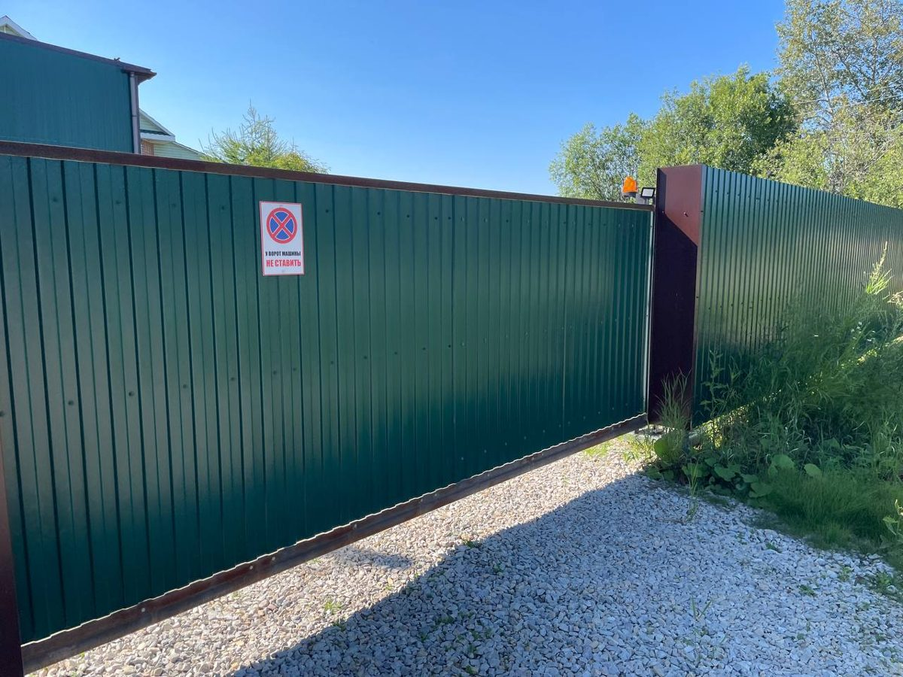

Склон, вода, болото
Прямое назначение сваи: лопасть держит там, где забитый столб не удержится. Перепад высот — не проблема.

ул. Ручейная · 64 м за 2 дняПрофтруба 60×60 забивается на 1–1,5 м и присыпается грунтом или щебнем.
Свая с лопастью закручивается на 1,8 м — ниже глубины промерзания в Коми (1,7 м). Лопасть держится за плотный грунт.
Прямое назначение сваи: лопасть держит там, где забитый столб не удержится. Перепад высот — не проблема.
Профлист 2 м — это парус, откатные ворота — тяжёлая створка. Здесь столбы должны стоять как вкопанные, годами.
Лёгкий продуваемый забор, к которому не предъявляют требований по ровности. Переплачивать за сваи нет смысла.
Нужно закрыть периметр недорого и быстро, а подравнять столб через несколько лет — не проблема.
Реальные объекты в Сыктывкаре и окрестностях: где, когда, что входило и финальная сумма по договору. Плашка на фото — тип основания.
Цена за метр отличается от объекта к объекту: откатные ворота, тип основания, демонтаж старого забора и рельеф меняют смету. Поэтому и нужен замер — он бесплатный.
Квиз или звонок. Перезваниваем в течение 15 минут, называем ориентир по цене.
Бесплатно, в удобное время. Смотрим грунт, рельеф, где ворота. Считаем на месте.
Смета фиксируется. Аванс на материал, дату монтажа ставим в договор.
1–2 дня. Своя бригада, свой инструмент. Мусор увозим.
Проходите вдоль забора, проверяете. Доплата — только когда всё устраивает.
Задайте их нам и всем, у кого ещё считаете. Ответы объяснят, откуда берётся разница в цене.
В договоре фиксируем сегодняшнюю смету. Металл к следующему сезону дорожает, ваша цена — нет. Сваи ставим и по холоду, поэтому сентябрьские заявки успеваем закрыть в этом году.